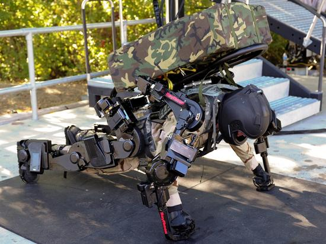
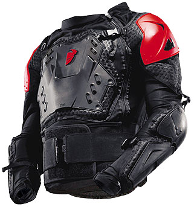
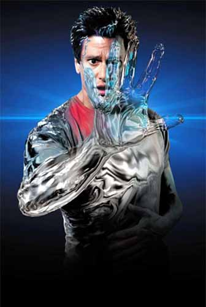
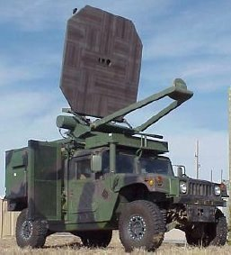
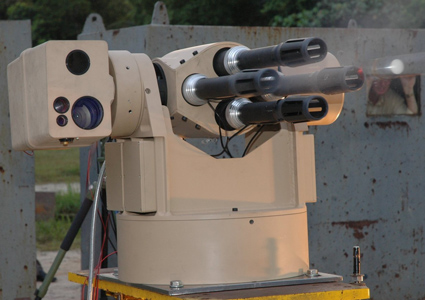

Human Performance EnhancersThe human is at the core of all battlefield operations, but the human body has a rigid set of variables which determines its breaking points and needs. Imagine if our soldiers or law enforcement could function beyond the normal peak range for human beings? Imagine if they didn't have to worry about normal bio functions like recuperation and eating food? Being able to determine where you want energy to be used so you can perform even better at a specific task. Or, being more powerful, more intelligent, quicker or having more stamina than your opposition's soldiers, that's almost impossible. Performance enhancing drugs aren't a new thing, but using them without massive side effects or concerns for long term damage is. Scientists and tactical geniuses have joined forces to harness the maximum, for the people who we rely on to maintain our standing in the world and our personal freedoms, in the form of the newest military technologies. The re-engineering of the metabolism of energy in the body is already here, and it's not even a single source of technology; several leading labs are developing huge advancements in this type of supplement. If a soldier didn't have to eat for a week, but could function without energy drain or overexertion, or if they could avoid having to sleep for twice as long as an enemy combatant, wouldn't that make a difference? The future of energy metabolism is here. |
|
|  | Power Assisted Suits for Superhuman CapabilitiesIt's scary that DARPA made a robotic cheetah that can run 35 miles an hour, but the real technology for today is the power assisted robotic suit for human soldiers. Remember the scenes in Avatar, where they could control those crazy two legged gunships by using real body movements? Remember Robocop? That's what this is, essentially. Ever tried to crush a cockroach? Almost impossible. It's because of their exoskeletons. Military technology is about to use that design as a basis for a new human program. Picture a half robot, half human soldier able to use mechanical advantage engineered into a suit of metal and composites to gain physical advantage over his opposition. Within a couple years, soldiers could be jumping significantly higher due to the springs and rocket propulsion devices in his exoskeleton's feet; being able to avoid being crushed because the ultra rigidity of the outside suit. How about making an advanced decision to move out of the way based on environmental changes, or moving the soldier into a power assisted safe position, because it can sense imminent danger? Improving strength to overpower the opposition in hand to hand situations and helping muscles to stay within normal ranges to avoid overexertion; just two more ways these suits do the job for the modern soldier. This isn't the future, this is available in the present, and is ready to undergo trials to determine widespread fitness for elite troops. Two major U.S. government contractors already have prototypes in testing. |
|  | The Incredible Dragon Skin Body ArmourKevlar and spectrashield aren't new. Layered armor has been used in tanks since basically day one of their introduction. Ceramic matrix composites, as a form of impact absorption, are not a new technology. But, the Dragon Skin body armor takes all of these technologies, to combine them into a nearly indestructible personal body armor. Pinnacle Armor produces a product based on the overlapping scales of the mythical dragon, and if the real results of the testing are any indication, then it's only a matter of time before they make it perfect. Here's the point in time where we talk about politics and how they shape procurement contracts: as the Dragon Skin armor has seen some conflicting reports as to the efficacy of the product in extreme battlefield conditions. It's highly unlikely the product fails where others don't, simply based on the fact that the armor is over-engineered comparatively to the other competitors. It is MUCH more likely that the vendors sweetened the deal a bit more for the standard stuff, to avoid losing the contract to the newcomer: Pinnacle. The product is capable of much better penetration avoidance, blunt force mitigation and allows for far superior movement and comfort, at a third of the weight for the same level of protection. Aramid ceramic composite hybrids are the future of the body armor industry. Dragon Skin is the pioneering military technology in this space. |
|  | Cloaking with Metamaterial TechnologyCovert operations just got more covert. Metamaterial cloaking technologies are just now starting to hit the scene in a major way. The first usable metamaterial invisibility design uses tiny mirrors, to the tune of several hundred thousand holographic mirrors, flowing together to create an acute reflection of the immediate surroundings of the wearer. It projects a nearly undetectable camouflage to keep a moving object well hidden in dangerous areas. The possibilities are endless and as testing continues for viability, there are potentially new breakthroughs at the cusp of discovery. Already we have shape changing liquids, better quality reflective holograms and fabrics which can absorb colors based on environmental changes. Light absorbing fabrics which can distort reality for the viewer are next on the docket. It's only a matter of time before counter terrorists can walk into a camp and use short range weapons to impact the outcome of a battle. Frodo made it work in the Twin Towers movie and in about a decade the law enforcement, military and spy communities will be using it as well. |
|  | Riot Control WeaponsStink Bombs; High intensity sound waves; Microwave fields; and "non lethal" large crowd control are just a few of the ideas, most of which are even already in existence, and being tested around the world. Concentrated scent based dispersion bombs are cheap and effective, often causing the instantaneous breakup of crowds and rioters. The key is the type of scent and the area they're used in. Vomiting, lack of focus and difficulty breathing are just a few of the ways this technology puts the hammer down on mischievous crowds. Immediate relocation is an almost guaranteed effect of the super concentrated stink bombs, being developed at all levels of private and public industry. Feces, skunk, vomit, dead bodies, and other specific smells are undergoing testing now. LRAD which stands for Long Range Acoustic Devices stole the show, when commercial cruise ship staff members used these devices, designed for bird dispersion, to repel Somali pirates in 2005. It's a relatively simple technology poised to turn specific comprehensive competing military technology on its head. It uses a 95+ dB concentrated sound wave to dispossess a target of their hearing, create an incredible headache, and require them to use their hands in order to restore some level of normalcy. Active Denial Systems are essentially microwaves, that can be pinpointed to cause extreme (but not long lasting) discomfort by heating a target up from the inside out. It essentially causes every bit of water carrying cell in the body to start the boiling process. Of course, in most cases, by the time the boiling actually occurs, the target has already left, less interested in being a target any longer. The after effects are extreme pain, inability to move great distances and massive muscle cramps. But after some time, the effects wear off. It's an effective way to treat rioters and large angry groups. ADS was present (as well as LRAD) in several scenarios for the Occupy groups around the world. |
|  | Heavy MetalAustralian firm "Metal Storm" has an offering, that will literally blow up the competition in military technology. It gives an entirely new meaning to rail guns, and launches projectiles at obscene rates of fire with pinpoint accuracy and remote firing capabilities. Because the ammunition is stacked and doesn't require mechanical cycling to speak of, the projectiles can be launched continuously without concern of failure or reloading (so to speak). Their FIRESTORM can launch 24,000 grenade rounds per minute, using IP technologies to remote fire and neutralize a target. The REDBACK is a rail gun, which can deliver hundreds of rounds per second to a target via multiple barrels, automated positioning and the ingenious stacked munitions technology. The amount of metal on target is unfathomable, and the sound is docile, in comparison to the shredded results of the target left over after thousands upon thousands of rounds have been put on and through the target. As of now, the military has (unofficially) deemed this amount of firepower unnecessary, as they have not potential use for such high rates of fire, but that doesn't mean that the protocols of war cannot change, leaving this military technology as the standard on the battlefield. |